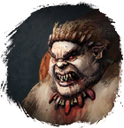
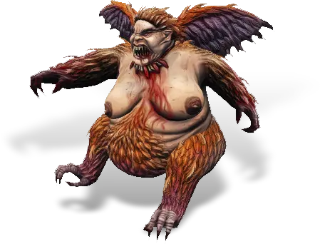

Открыть в интерактивной вики →

| Уровень | лёгк. 115 / норм. 135 / тяжел. 165 |
|---|---|
| Зоны атаки | , , ментальная |
| Шанс дропа 100% — уровни | лёгк. 1-90 / норм. 1-90 / тяжел. 1-120 |
| Шанс дропа 90% — уровни | лёгк. 91-100 / норм. 91-100 / тяжел. 121-140 |
| Шанс дропа 70% — уровни | лёгк. 101+ / норм. 101+ / тяжел. -- |
| Группа боссов | Тревога |
| Сила (PvE) | лёгк. 6368 / норм. 9074 / тяжел. 13 276 |
| Аспект арены | Velhar |
| Здоровье | лёгк. 22 000 / норм. 43 000 / тяжел. 78 000 |
| Мана | 24 000 |
| Выносливость | 24 000 |
Команда

Навыки


Дроп
 Глиф Подмастерья
Глиф Подмастерья 
 Путь тревоги
Путь тревоги 


 III-VI
III-VI  Гроссмейстерский глиф
Гроссмейстерский глиф  Даймонит 40
Даймонит 40 | Рары | Синергетики | Эпики | |||
 Рары Рары Рары Рары Рары Рары Рары Рары Рары Рары | 30-70 ур. |  Эпики Эпики | |||
Прочее:  Путь тревоги Путь тревоги  Глиф Подмастерья Глиф Подмастерья | |||||
Требования для входа
тяжел.: Путь тревоги
Путь тревогиПуть по картам
Статистика
 |  |  | |||
| Уровень: 115 | Уровень: 135 | Уровень: 165 | |||
Здоровье: 22 000 Мана: 24 000 Выносливость: 24 000 | Здоровье: 43 000 Мана: 24 000 Выносливость: 24 000 | Здоровье: 78 000 Мана: 24 000 Выносливость: 24 000 |
Умения
| Удар в живот Немота Укол Куклы |
Иммунитеты / особые умения
Групповой разворот
Призыв: Гарпиёнок
Устойчивость к ближним атакам
Иммунитет к дальним атакам
Иммунитет к ментальным атакам
Локация
Скала Гарпий